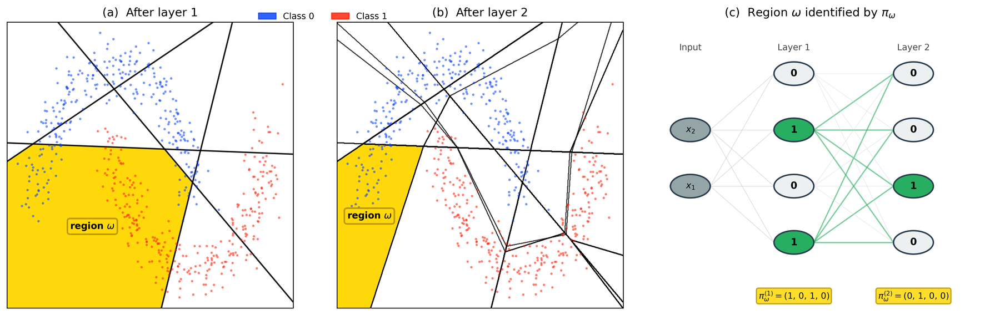

Abstract
The camera-ready abstract will appear here.
1. Linear regions and routing information
A trained network on the 7-class Composite dataset. Each colour is a linear region that contains held-out points; grey regions contain none. The routing information Î(Y; ΩD) is the plug-in mutual information between region and label over the N = 2,000 held-out points. Watch it rise with depth and during training, and how the number of regions grows.
2. The functional quotient
Deep networks create far more regions than the data can populate, and the plug-in estimate saturates. Regions whose active linear maps à differ by at most ε in relative Frobenius distance implement (nearly) the same function and are merged into one class, visiting regions in first-encounter order. Colours are quotient classes; thin lines are the original region boundaries. At the first layer nothing merges: distinct patterns are distinct maps.
3. Plug-in bias as ρ → 1
The plug-in estimate is only trustworthy when regions hold many points, i.e. when ρ = |ΩD| / N is small. Here routing is simulated with a known true MI: K equally likely regions, each with a home class kept with probability equal to the signal strength. As N shrinks relative to K, ρ → 1 and the plug-in estimate (solid) climbs to H(Y) whatever the truth, while Miller–Madow (dashed) overshoots below zero. Dots are the paper's 138 network cells (filled: plug-in, open: Miller–Madow), normalised by H(Y).
4. Routing information without learning
Left: a network trained on the true labels. Right: the same architecture trained on randomly permuted labels — it learns nothing about the true classes (test accuracy near chance), yet its partition still separates the held-out points, and the wide network keeps a routing information close to H(Y). High routing information alone does not show learned structure; read it together with ρ and accuracy.
BibTeX
@inproceedings{myliuskroken2026intrinsic,
title = {Intrinsic Information Theoretic Analysis of {ReLU} Nets},
author = {Mylius-Kroken, Johan and Wetzer, Elisabeth and Ramezani-Kebrya, Ali
and Jenssen, Robert and Wickstr{\o}m, Kristoffer},
booktitle = {Advances in Neural Information Processing Systems},
year = {2026}
}